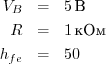

Биполярный транзистор
Транзистор — это электронная кнопка. На кнопку нажимают пальцем, а на биполярный транзистор — током.
Транзисторы используют для управления мощными нагрузками при помощи слабых сигналов с микроконтроллера.

- Нога, выполняющая роль «кнопки» называется база (англ. base)
- Пока через базу течёт небольшой ток, транзистор открыт:
- Большой ток может втекать в коллектор (англ. collector)
- и вытекать из эмиттера (англ. emitter)
Основные характеристики
| Макс. напряжение коллектор-эмиттер | VCE | Вольт |
| Максимальный ток через коллектор | IC | Ампер |
| Коэффициент усиления | hfe |
Типовая схема подключения
Транзистор усиливает максимально допустимый ток в hfe раз:
Пример расчёта
Если управляющий сигнал на базе транзистора с hfe и резистором номиналом 1 кОм составляет 5 вольт:
- Какой максимальный ток сможет пропустить через себя транзистор?
- Каким по величине будет управляющий ток?
Дано

Найти
Решение
Вывод
Если на базу подаётся 5 В через резистор в 1 кОм, транзистор откроется настолько, что будет способен пропустить до 250 мА. При этом управляющий ток составит всего 5 мА